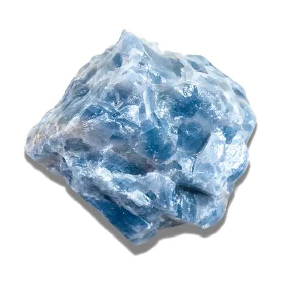

Mineral Grimoire
 Blue Calcite
Blue Calcite
Blue calcite is a Trigonal variety of calcite with a Mohs hardness of 3, named by Pliny the Elder in 79 CE from the Latin calx meaning "lime." Its soft blue color comes from inclusions of oxidized copper, and it is among the most abundant and widely distributed of the calcite varieties.
Appearance
Soft powder blue to medium sky blue, opaque to translucent, with a vitreous to waxy luster. Often found in massive form, occasionally displaying subtle banding.
Magickal Properties
Blue calcite is above all else a stone of calm and clear communication. It carries a frequency of harmony and reconciliation that gently settles emotional turbulence and opens the pathways of honest, compassionate expression. Placed in shared living spaces, it works quietly to soften tensions between family members and invite tenderness back into everyday interaction.
This stone supports the development of spiritual voice, particularly for those who teach, explain, or share beliefs that require courage to express. It brings awareness to the relationship between words and reality, helping you recognize how the stories you tell yourself shape your experience. When you find yourself stuck in a difficult mood or a pattern of negative thought, blue calcite helps you step back, reframe, and find a more spacious perspective.
Blue calcite also offers a protective quality, particularly for empaths. Carried on the body, it forms a subtle energetic buffer that reduces the bleed of others' emotions and thoughts into your own field, allowing you to remain compassionate without becoming overwhelmed. It has a long-standing reputation for guarding against theft, especially when paired with black tourmaline.
Chakra Work
Blue calcite activates both the Throat and Third Eye Chakras. Placed on the Throat, it encourages emotionally soothing communication and supports respiratory healing, making it a useful complement to treatment for congested coughs or mild asthma when placed on the chest during a grid session. Placed on the Third Eye, it stimulates the growth of clairvoyant and telepathic ability and, when kept beside the bed, helps activate the Third Eye during sleep to support dream recall and interpretation. It also gently opens access to the astral realms, making it a supportive tool for practitioners beginning to explore dimensional journey work.
Healing
Blue calcite supports the respiratory system and can be used to complement treatment of breathing difficulties, sore throats, and congestion. It benefits the throat, lungs, and thyroid, and calms overactive nerves.
Position
Place on the Throat Chakra for emotional calm and harmonious communication. Place on the Third Eye for intuition and dream work. Keep next to the bed for overnight dream activation. Carry for empathic protection. Place in shared home spaces to promote family harmony.
Entertaining and Gatherings
Blue calcite is an excellent stone to incorporate into dinner parties, holiday tables, and family gatherings. Add it to a centerpiece alongside Kunzite to promote connection, unity, and harmony among guests. Its gentle, calming frequency softens tensions and encourages peaceful interaction, making it especially valuable at intimate family dinners where emotions can run high.
Did You Know?
Blue calcite quietly heightens your sensitivity to the subtler energies present in your environment, making it an ideal companion stone for anyone developing their psychic or intuitive awareness.